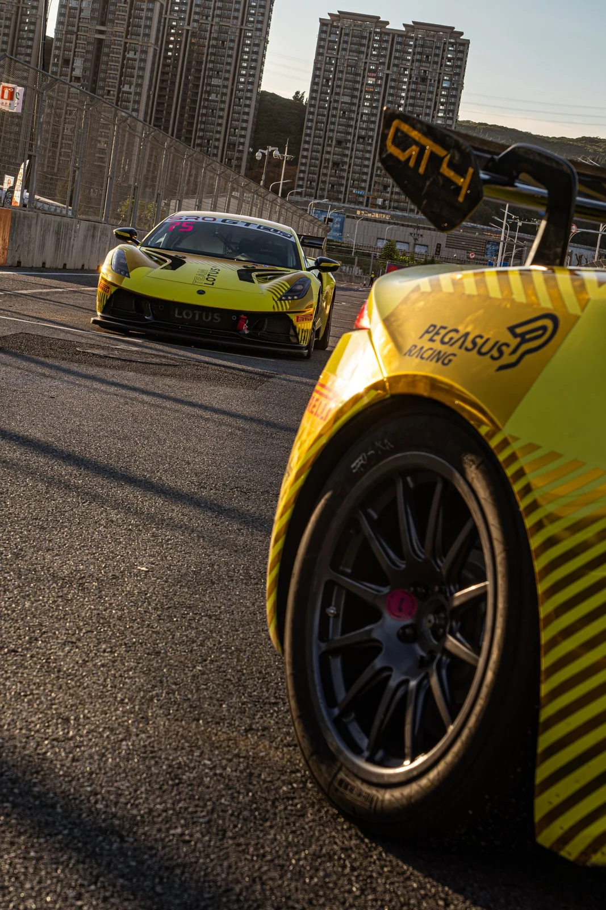
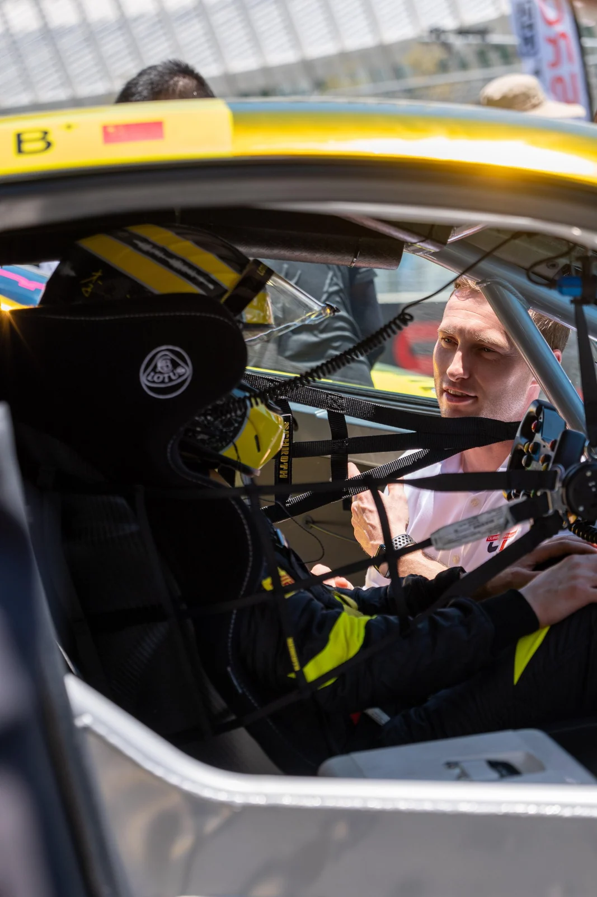

VANTAGE Production / RFG Studio
平潭赛道现场
以赛道与维修区为叙事场景，记录莲花赛车、车手及团队在 SRO GT Cup 平潭站的工作状态与现场氛围。

现场背景
在 SRO GT Cup 平潭站，赛道上的速度只占赛事的一部分。维修区里车辆、车手与团队的相互配合，同样构成这组照片的主线。
拍摄与编排
选片时把环境、车辆和人员交错编排。远景给出赛场尺度，近景让观众看到车辆和工作细节。用这组照片做专题时，可以先建立场景，再把视线转向人和车。


摄影 · RFG Studio